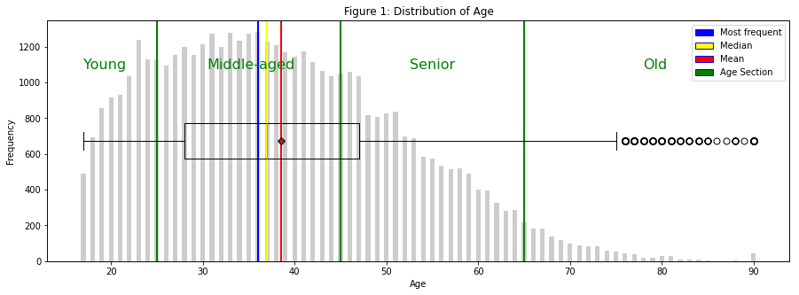
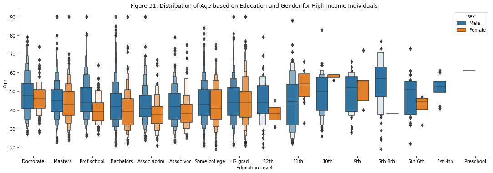
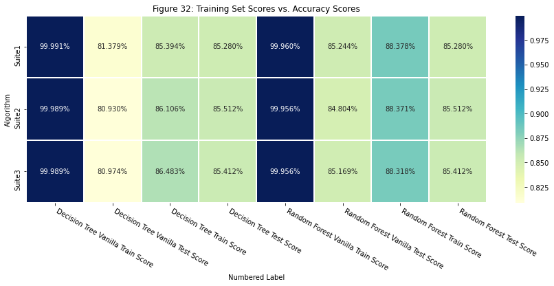

Income Disparity Analysis
Exploring Income Disparity and Model Performance in the UCI Adult Dataset: an analysis of demographics and tree-based models.
View on GitHubBuilt With
The UCI Adult Dataset, containing various individual attributes, was analyzed to predict whether an individual's income exceeds $50,000 per year. The project aimed to discover the demographic of the population and the above-average income level group, as well as examine the performance of Decision Tree and Random Forest models in predicting income levels.
The project involved two main tasks:
- Exploring the dataset using descriptive statistics and visualizations to uncover demographic characteristics and income distribution patterns.
- Employing Decision Tree and Random Forest models to predict income levels and examining their performance with and without hyperparameter tuning.
Visualisation



Data Exploration
The dataset was explored using descriptive statistics and visualizations, revealing:
- A skewed age demographic towards younger individuals, with most data falling below 60 years old.
- High school graduates, some college, and bachelor's degree holders making up a substantial proportion of the dataset.
- Male dominance in both above and below-average income categories, but females having a higher proportion earning below-average income.
- Positive correlation between education level and above-average income percentage.
- Females achieving above-average income faster than males, particularly in executive, specialty, and administrator positions.
Data Modeling
Decision Tree and Random Forest models were employed to predict income levels. Key findings include:
- Initial models showed overfitting, with high training scores but lower test scores.
- Hyperparameter tuning using GridSearchCV improved model performance and reduced overfitting.
- After tuning, both models achieved similar test accuracy, recall, and F1 scores, suggesting comparable performance.
- Random Forest initially outperformed Decision Tree, but after tuning, both models demonstrated equivalent effectiveness.
Visit the GitHub Repository
For the full code and documentation, visit the GitHub repository.